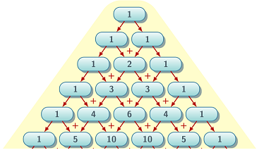

Итеративные и рекурсивные процессы
Любая серьёзная программа содержит в себе в том или ином виде повторение вычислительных действий. Для этого используются различные циклические конструкции. В большинстве процедурных языков программирования для этого используются такие специальные формы:
forдля циклов с известным числом повторений и счётчиком;foreachдля обработки конечных структур;while(илиuntil) для циклов с неизвестным (возможно, бесконечным) числом итераций.
В функциональном программировании циклические конструкции устроены иначе. Мы уже говорили, что решив использовать только чистые функции, мы отказываемся от использования изменяемых данных и операции присваивания. Как же в таком случае реализовывать
циклические процессы с изменяемыми параметрами, такие, как цикл while или итератор for? В функциональной парадигме для этого используется рекурсивный вызов, или рекурсия — вызов функции из её собственного
тела.
Пусть нам нужно найти сумму квадратов целых чисел от 1 до
def sumsq (n): sum = 0 while n > 0: sum = sum + n*n n = n - 1 return sum
Но что делать, если у нас нет присваиваний, или мы не хотим ими пользоваться? Эту задачу можно решить при помощи рекурсии.
В этом определении мы заменяем решение исходной задачи решением меньшей задачи, понимая, что постепенно придём к минимальному, нулевому значению.sumsq :: Integer -> Integer sumsq 0 = 0 sumsq n = n*n + sumsq (n - 1)
В теории вычислений важным является вопрос завершаемости вычислительного процесса. Для получения результата цепочка рекурсивных вызовов должна, рано или поздно, прекратиться. Таким образом, рекурсивная функция обязательно должна включать в себя конструкцию выбора, определяющую условие (или условия) выхода из рекурсии. Такие условия называют базой рекурсии.
В ходе вычисления рекурсивной функции, происходит расширение вычисляемого выражения, по мере того, как процесс строит цепочку отложенных операций, а затем происходит сжатие, тогда, когда выполняются эти отложенные операции. Для хранения отложенных вчислений и результатов обычно используется стек — структура данных в памяти, работающая по правилу «последним вошёл — последним вышел». В Haskell вместо стека используется динамически выделяемая память.
Проследим, как действует функция sumsq при вычислении суммы квадратов первых трёх натуральных чисел.
Такой тип процесса, который характеризуется цепочкой отложенных операций, называется рекурсивным процессом.sumsq 4 16 + sumsq 3 16 + (9 + sumsq 2) 16 + (9 + (4 + sumsq 1)) 16 + (4 + (9 + (1 + sumsq 0))) 16 + (9 + (4 + (1 + 0))) 16 + (9 + (4 + 1)) 16 + (9 + 5) 16 + 14 30
Реализация итерационного цикла на регистровой машине более эффективна, чем реализация рекурсии, поскольку итерации не требуют использования стека для хранения отложенных операций и вычисление не имеет двух этапов — расширения и сжатия. По этой причине у рекурсии сложилась «дурная репутация» в мире императивных языков программирования. В некоторых руководствах по программированию рекомендуют, по-возможности, избегать использования рекурсии.
Однако, в рамках чистого функционального программирования без рекурсии не обойтись. Значит ли это, что мы обречены на неэффективные функциональные программы? Оказывается, можно так построить рекурсивное определение функции, что оно будет эквивалентно итерационному циклу и по скорости выполнения и по использованию памяти (стека).
Посмотрите на следующую схему вычислений:
Она в точности соответствует итеративному решению. Здесь так же введены счётчикsumsq' :: Integer -> Integer sumsq' n = go 0 n where go s 0 = s go s n = go (s + n*n) (n - 1)
n и накопитель s, но мы обошлись без присваивания. Инициализация переменных произошла
при первом вызове функции go, а последовательное изменение их значений происходит во время рекурсивного вызова этой функции.
Изобразим по шагам процесс вычисления sumsq' 4, показывая, чему равны текущие значения аргументов функции go:
Приsumsq' 4 go 0 4 go (0 + 16) 3 go (16 + 9) 2 go (25 + 4) 1 go (29 + 1) 0 30
s. Рассмотренный нами процесс не растёт и не сжимается, такой процесс называется итеративным, в нём решение задачи заменяется решением
другой задачи.
sumf f a b возвращающую сумму значений произвольной функции f в целых числах от a до b, реализуя рекурсивный и итеративный процессы.Разницу между рекурсивным и итеративным процессами хорошо показывает пример вычисления чисел Фибоначчи, которые определяются соотношением
def fib (n):
a = 0
b = 1
if n == 1: return a
if n == 2: return b
while n > 2:
(a, b) = (b, a + b)
n = n - 1
return afib n а также функцию fib' n, реализующую итеративный процесс. Вычислите с их помощью
Вариант решения
fib :: Int -> Integer fib 1 = 0 fib 2 = 1 fib n = fib (n-1) + fib (n-2)fib' :: Int -> Integer fib' n = go 0 1 n where go a b 1 = a go a b 2 = b go a b n = go b (a + b) (n - 1)
accumulate g x0 f a b, такую, чтобы функцию sumf можно было бы выразить через неё: sum = accumulate (+) 0
Знакомство со списками
Тип для списка в Haskell определяется следующим образом:
Из определения следует, что список может быть либо пустым, либо образован с помощью операцииdata [a] = [] | a : [a]
(:), которая добавляет в существующий список новый элемент.
[] 1:[] 1:2:[] 1:[2,3] (1:[]):[] []:[[1,2,3]] [1,2,3] ++ [10,20]
Определение списка рекурсивное. Роль базы рекурсии выполняет пустой список []. По опыту работы с типами для цепей и сопротивлений мы можем заключить, что все функции, обрабатывающие списки, должны рассматривать эти два варианта. Например,
функция length, вычисляющая длину списка, может быть определена так:
В этом определении мы заменяем фуекциюlength [] = 0 length (x:xs) = 1 + length xs
(x:) на (1+). Перебирая все элементы списка, мы получаем сумму единиц, соответствующую их количеству.
sum, вычисляющую сумму элементов списка.Создаются списки тоже согласно своему определению. Так, например, можно создать список указанного размера, содержащий одинаковые элементы:
replicate 0 x = [] replicate n x = x : replicate (n-1) x
reverse, take, head, tail, takeWhile, dropWhile. Вычислите следующие примеры в интерпретаторе и объясните своими словами, что делают
эти функции.reverse [1..5] reverse "Hello, people" take 5 [1..10] take 100 [1,4,2,6] head [1..4] tail [1..4] takeWhile (< 5) [1..20] dropWhile (< 5) [1..20] take 10 $ dropWhile (< 5) [1..]
take 10 [1..] take 10 $ repeat 'a' take 10 $ cycle "abc" take 10 $ iterate (2*) 1 let ones = 1 : ones take 10 ones
map, filter, zip и zipWithmap (2*) [1..5] map (replicate 3) [1..5] map (`replicate` 3) [1..5] filter (\i -> i^2 < 5) [1..20] filter even [1..20] zip [1..4] [5..8] zip "Hello" $ repeat 1 zipWith (+) [1..4] [5..8] let lst = [1..5] in zip lst (tail lst)
any, each, and, or. Списки и циклические конструкции
Чистые функции можно представить в виде чёрных ящиков, имеющих один или несколько входов и единственный выход. Если типы входов и выходов согласуются, то две функции можно соединять в цепь. Каждая такая цепь сама будет представлять собой чистую функцию, то есть, чёрный ящик, пригодный для построения новых и новых цепей.
Легко вообразить однократное вычисление с помощью функциональной программы: на еë вход подаются какие-то допустимые значения, а на выходе получается результат. Если же логика программы-функции предполагает еë многократное исполнение, то на вход
можно подать поток данных, получая поток результатов. Мы уже делали это с помощью оператора <$>, применяя функцию к списку (потоку) данных и преобразуя их в список (поток) результатов.
Если продолжить аналогию с потоками, то можно расширить инструментарий, добавив к преобразователям потоков функции, управляющие ими. Потоки данных можно порождать, соединять, ограничивать, фильтровать и поглощать, превращая в какое-то одно результирующее значение. Именно такое применение функционального подхода к композиции вычислений вы можете встретить в большинстве современных языков ( C#, Python, JavaScript, Ruby и т. д.).
В функциональном программировании роль потока данных выполняют ленивые списки. В ленивом языке Haskell, они совпадают с обыкновенными списками данных.
Рассмотрим, в качестве примера, задачу представления чисел в виде строки из цифр в указанной системе счисления.
Императивная программа, генерирующая цифры числа
def toBase(b, nb):
if b <= 1:
raise RuntimeError("Base must be integer greater then 1")
if n == 0: return [0]
res = []
while n > 0:
m = n % b
res = [m] + res
n = floor (n / b)
return resФункциональная программа, которая в точности повторяет логику процедурного решения и реализует такой же вычислительный процесс может быть рекурсивной (реализующей итеративный процесс):
toBase :: Int -> Int -> [Int] toBase b n | b <= 1 = error "Base must be greater then 1" | n == 0 = [0] | otherwise = go [] n where go res 0 = res go res n = go (mod n b : res) (div n b)
Однако можно организовать функциональную программу совсем иначе — в виде потоков данных. Давайте сформулируем декларативное определение результата программы:
Переводя на язык обработчиков списков, получаем такую программу:
toBase :: Int -> Int -> [Int] toBase b n | b <= 1 = error "Base must be greater then 1" | n == 0 = [0] | otherwise = reverse $ map (`mod` b) $ takeWhile (> 0) $ iterate (`div` b) n
toBase. Объясните зачем завершает цепочку вычислений функция reverse. Переведите с помощью функции toBase число 2021 в систему с основаниями
2, 3, 5, 16 и 100.Таким образом, на практике явной рекурсии при организации циклических процессов можно избежать, сведя задачу к комбинации простых рекурсивных схем, оперирующих потоками данных:
- источник — порождение потоков данных;
- преобразователь — последовательное преобразование или фильтрация всех элементов потока;
- ограничитель потока
- слияние потоков
- сток — свёртка или аггрегация потока.
[1..13] sum map takeWhile [1..] length iterate repeat product zipWith dropWhile filter zip or any
sum f a b. Задачу можно разбить на три части:
- создайте поток чисел от
a доb ; - преобразуйте этот поток в поток квадратов чисел;
- просуммируйте полученный поток.
Возможная схема решения
- определите фуgнкцию, вычисляющую факториал от
n , как произведение ряда натуральных чисел от1 доn ; - сгенерируйте последовательность чисел от 0 до бесконечности;
- превратите её в последовательность значений
1/i! ; - ограничьте полученную последовательность элементами, превышающими указанную
10^{-14} (используйте функциюtakeWhile); - просуммирупйте последовательность.
count p lst, которая считает сколько раз в списке встречается элемент, удовлетворяющий предикату p. Как с её помощью подсчитать в строке количество цифр?Посмотрите в справке о генерации списков.
1 2 3 4 5 6 7 8 9 10 ...Решите эту задачу на Haskell доступными вам способами (рекурсия, генераторы списков и т. п.).
Вариант решения
floyd :: [[Int]] floyd = let arsum n = (n*(n - 1)) `div` 2 in (\i -> [arsum i + 1 .. arsum (i + 1)]) <$> [1..]
Здесь arsum n — сумма арифметической прогрессии
Данные и коданные
В большинстве парадигм программирования списки играют роль данных, которые обрабатывает программа. В функциональном программировании это тоже, как правило, так. Однако здесь есть возможность порождать список (поток) и "поглощать" его в одной программе и даже в одной функции. В ленивых вычислениях никакого списка в памяти в таком случае так и не создаётся, он существует только в коде программы. Данные такого рода называются коданными (codata) — то есть сущностью, дуальной данным.

- Определите функцию
pascalStep, которая для любой строки в треугольнике строит следующую строку, складывая почленно строку саму с собой, сдвинутой на один элемент. Проверьте правильность её работы на простых примерах. - Определите с помощью
pascalStepбесконечную последовательность строк треугольника Паскаляpascal. - Найдите с помощью оператора
!!коэффициенты разложения(a+b)^{15} . - Определите функцию
binomial n k, как коэфициент приx^k в разложении(1+x)^n и сравните с биномиальным коэффициентом явно вычисленным по формуле:C_{n}^{k} = \frac {n!}{k!(n-k)!}. - Найдите коэффициент при
x^{10} в разложении(1+x)^{10000} . - После этого вычислите в этом же разложении коэффициент при
x^{9} иx^{11} . Обратите внимание на разницу в скорости вычисления коэффициентов и попробуйте её объяснить. - Покажите, что сумма
n -ного ряда треугольника Паскаля равна2^n .
Последовательность pascal, образованная рядами треугольника Паскаля, является не данными, а коданными, поскольку она никогда не появляется в памяти целиком. Каждый её элемент порождается по мере необходимости и тут же используется
для вычислений.
В роли коданных могут выступать не только линейные потоки. Принцип замены явной рекурсии порождением и обработкой индуктивных данных может быть обобщен и его можно применить к другим индуктивным структурам, например, к деревьям.
Покажем это на примере рекурсивной функции bisection, кторую мы писали на прошлом занятии. Вспомним реализуемый ею алгоритм:
- задан отрезок
(a,b) ; - задано условие
p , которое в некоторой точке на отрезке меняет значение (например, меняется знак числовой функции); - если
p(a) = p(b) , считаем, что искомой точки на отрезке нет; - если отрезок достаточно мал, решением является его средняя точка;
- в противном случае решение находится либо в правой, либо в левой половине отрезка.
Можно выполнить его полную декомпозицию, используя в качестве коданных бесконечное дерево разбиений интервала:
- Порождаем бесконечное дерево вложенных интервалов, деля их пополам.
- В этом дереве отыскиваем путь, соответствующий смене значения тестовой функции, представляющий собой бесконечную последовательность уменьшающихся интервалов.
- Отыскиваем в этой последовательности первый достаточно малый интервал.
Для бесконечного дерева можно создать такой тип:
Он параметризован типомdata Tree a = Node a (Tree a) (Tree a) deriving Show
a, так что наше дерево может содержать любые данные. Порождать это дерево можно такой функцией:
А выделять в нём путь — с помощью какого-то условия так:tree :: (a -> (a, a)) -> a -> Tree a tree f x = let (a, b) = f x in Node x (tree f a) (tree f b)
Наконец, мы готовы написать альтернативный вариант функцииpath :: (a -> Bool) -> Tree a -> [a] path p (Node a t1 t2) = if p a then [] else [a] ++ path p t1 ++ path p t2
bisection:
Здесь мы используем функциюbisection' :: Eq a2 => (Double -> a2) -> (Double, Double) -> Maybe Double bisection' p = (uncurry mean <$>) . find (\(a, b) -> abs (b - a) < 1e-11) . path (\(a, b) -> p a == p b) . tree (\(a, b) -> let c = mean a b in ((a,c),(c,b)))
find из библиотеки Data.List и функцию uncurry, которая функцию двух аргументов превращает в функцию от пары.
Характерная особенность такого подхода состоит в том, что решение задачи сводится к комбинации универсальных инструментов: ни одна из функций find, path или tree изначально ничего "не знает" о том, какую
именно задачу мы решаем. О конкретной постановке задачи они узнают от переданных им аргументов — лямбда-функций.
bisection' работает точно также как и функция, реализованная нами на прошлом занятии.Это решение мы рассмотрели скорее для расширения сознания. Метод бисекции проще реализуется простой рекурсией. Однако, подобная декомпозиция становится по-настощему полезной при работе со сложными многоступенчатыми алгоритмами, такими как генерация сеток для численного моделирования или поиск оптимального хода в шахматах.
Дополнительный материал
Некоторые алгоритмы вычислительной математики
Для задач вычислительной математики функциональный подход не оптимален, ни по быстродействию, ни по использованию памяти. Однако декларативный подход позволяет очень точно выражать смысл алгоритмов, поэтому имеет смысл познакомиться с ними в рамках этого курса.Численное интегрирование
Для повышения точности численного интегрирования (см. занятие 1), интервал интегрирования разбивается на несколько маленьких интервалов и на каждом из них интеграл вычисляется методом Гаусса, после чего результаты суммируются. Напишите функцию
integrate f mesh, вычисляющую интеграл таким способом, используя задаваемую пользователем сетку mesh.
Решение алгебраических уравнений
Произвольное аглебраическое уравнение
Реализовать метод Ньютона функционально можно, буквально так:
newton :: (Double -> Double) -> Double -> Maybe Double newton f x = limit . take 20 . iterate (\x -> x - f x / diff f x)
limit :: [Double] -> Maybe Double, которая для сходящейся последовательности вещественных чисел возвращает её предел, или Nothing, если предела не существует.
Проверьте корректность работы функции newton на примере линейных и квадратных уравнений.
newton и bisection в функцию findRoot, которая в случае неуспеха метода Ньютона применяет метод бисекции.Решение ОДУ первого порядка
Самый простой способ численного решения задачи Коши
euler :: Method и solveODE :: Method -> ODE -> Step -> [Pt] для таких типов:
Решите с их помощью несколько задач Коши:-- точка решения (x,y) type Pt = (Double, Double) -- шаг интегрирования h type Step = Double -- метод решения type Method = Step -> Pt -> Pt -- задача Коши: правая чисть уравнения и начальное условие data ODE = ODE (Double -> Double -> Double) Pt
Метод Эйлера прост, но неустойчив. Это проявляется в том, что для больших шагов последовательность решений не только не сходится к решению уравнения, но начинает колебаться или вовсе расходится. Вы можете убедиться в этом на примере задачи
Для преодоления этой проблемы используются неявные методы. Приведём в качестве примера неявный метод Эйлера:
findRoot. Если, по каким-то причинам, решение аглебраического уравнение получить не удаётся, используйте явные методы.